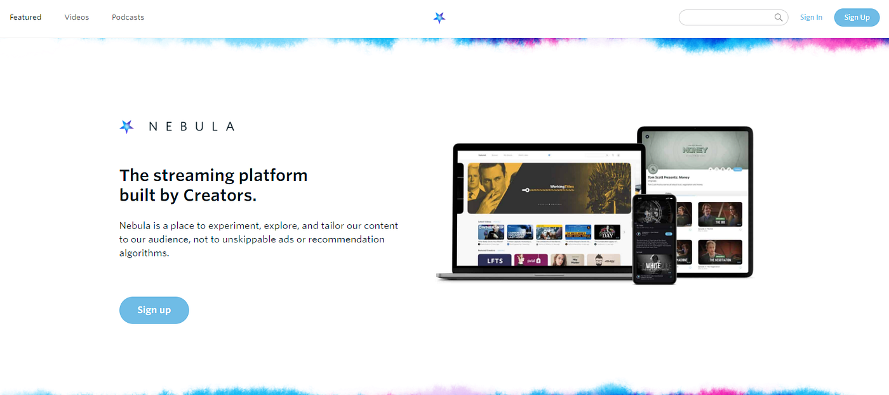
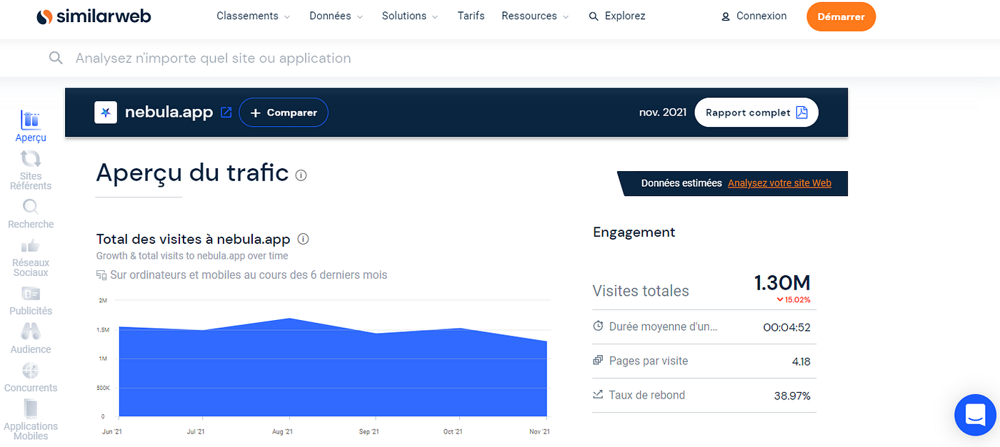
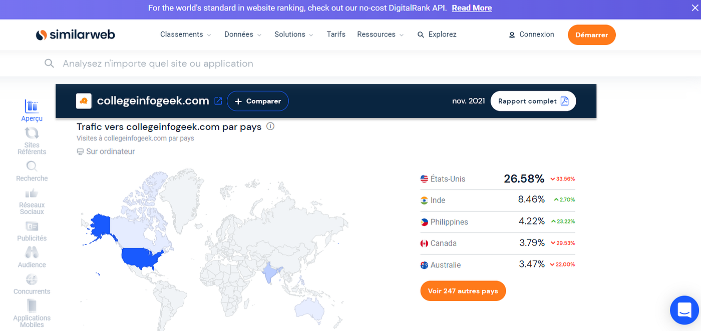
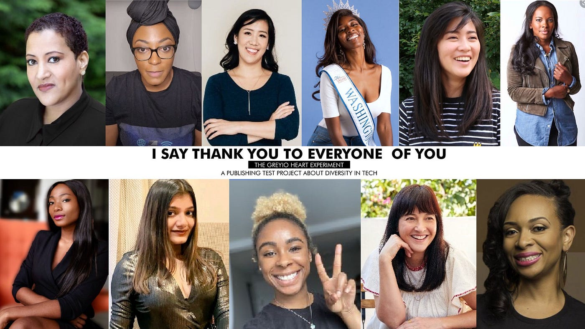

Feb 1
The shift of the creator economy
Nebula.app When Creators like writers bundle their artistic products and services

Nebula is a brand new streaming service featuring thoughtful content and all-well new originals from some of the smartest creators who have decided to own to own and operate their streaming platforms. By doing this they are following without knowing me this recommendation that I have given to all creators from programmers to writers to own the medium because if the creator doesn’t own the medium that connects her with the audience she is servicing it is likely that most of the economic benefit will land on the on of the platform owner. That’s why I have advised all creators to own the medium in this past article that I have published in Medium.
I am happy to see that people like Ali abdaal have understood this fact are starting to own the medium by building and operating their own streaming service


but every one of this increasing number of talented creators that this would count isn’t skilled at building apps and web platforms or have not enough time to go into the hustle of building such solution that will be their medium of exposing the art they are performing like writing in the case of Ali Abdaal. Then if you are a tech entrepreneur able to build a platform that could help creators connects with other creators and offer their content, services, and offers in a grouped and community branded way like how Ali and his peers have done with Nebula you could have a really good business model while helping creators be more exposed and get more revenues.
You can imagine operating a creator community-driven streaming platform as a service that helps creators discover other creators with whom they could join efforts and offer bundled content while the platforms will provide them all the required stack that will let them brand their own streaming platform and manage their revenues and metrics. Smart contracts here can play a major of assuring that each of the agreed creators respects all the starting elements that bound their collaboration. This same thing has been tested with the marketplace industry with solutions like .. but even for this solution that tries to segment large marketplace platforms like amazon there is this approach that is about finding linked products that don't compete and help their producer join force for operating a marketplace by themselves. By linked products, I mean products that we often buy at the same time or because of this other product that we have bought. Let’s do it together instead of each of us going through these big tech mammoths like youtube, Amazon, Netflix, Twitch … could be the next thing because making agreements that will be respected by even unknown people will be eased by cryptographic solution brought by blockchain solutions.
With such a kind of collaborative solution people like mbenda …, all women software engineers and youtube creators sharing their experience and knowledge for leading others to success could collaborate and manage not only their own streaming platform but also a new kind of mediatic tool that will help them raise their voices which matter a lot for us to have a better world where everyone has more ability … Youtube like platforms as social media leverage our need of expressing ourselves to create platforms that help everyone who wants create a self-media but the era of self-media is close to its ending and the era of community media is growing and solutions like this one that I have described above will be the medium through which this new form of media will diffuse and grow but it will never be possible without creators like these women software engineers.
